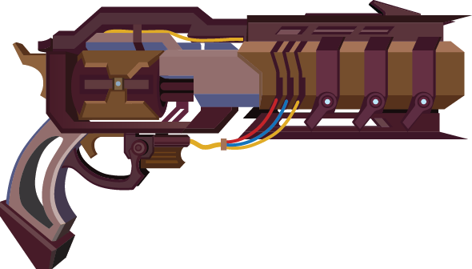
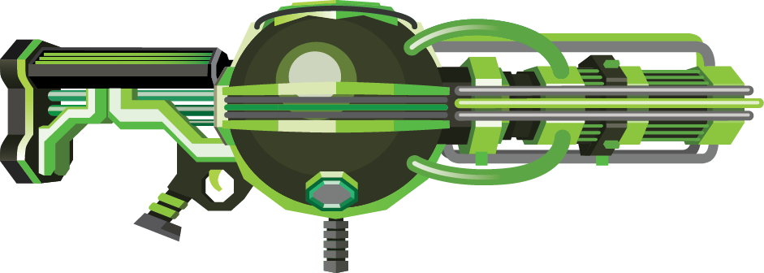
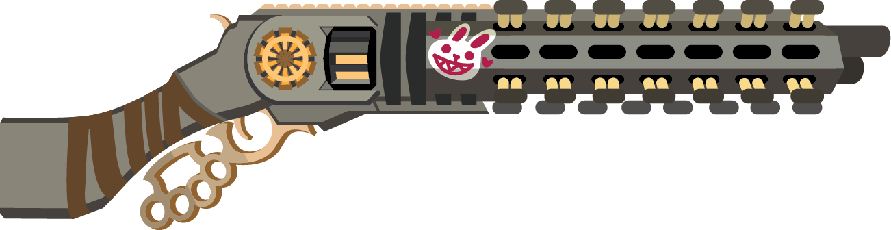
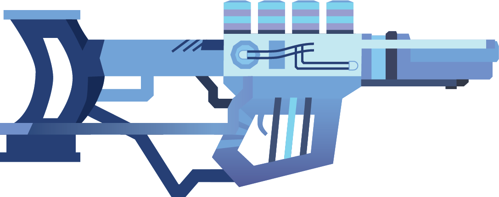
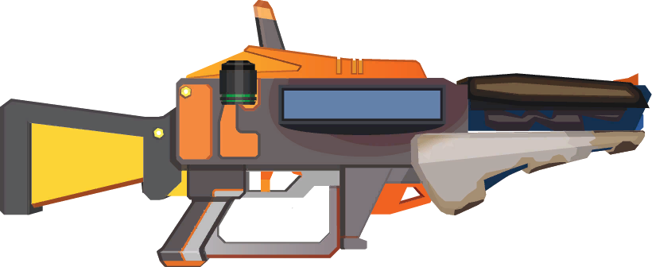
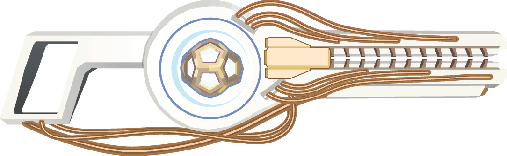

Plate Launcher
Plate Launcher
 Gunship Cannon
Gunship Cannon
The Gunship Cannon is your high AoE big damage weapon, and in a horde shooter that is exactly what you want.

Lead Flinger
The Lead Flinger got some buffs this patch which took it from RNG potential to a real force to be reckoned with.

Globbler
The Globbler was bugfixed this patch causing it to drop from grace. It is still a great weapon, but can no longer just clean the entire map at once.

Jackrabbit
The Jackrabbit is the bossing king, it is undisputed as a champion, but struggles in clean horde clearing like traditional explosive weapons.
 Swarm Launcher
Swarm Launcher
The Swarm Launcher is the second best ammo generator in the game. It also has the ability to be utilized as a backup boss slayer in a pinch.

Accelerator
The Accelerator got hit with a nerf that lowered its damage potential but made building more interesting. This causes a bit of a drop on the list but it is still a slayer.
 Shocklance
Shocklance
The Shocklance got another round of nerfs. This weapon seems to be finally hitting its balanced point where it is no longer the best weapon at all aspects of the game. Its a horde clear weapon now.
 Cycler
Cycler
The Cycler struggles to deal damage without a bug, its main build doesnt even rely on its own damage. Thus it cannot go higher than this tier, it is here because it is an Internal Combustion enabler.

Diffraction Driver
The Diffraction Driver is the newest weapon to the game. Its a solid shotty sniper type weapon. It struggles to deal enough damage to compete at the top level but isnt horrible since it has AoE.

DMLR
The DMLR has 2 builds, Autocycler and Concussive Wave, the problem is that Autocycler is the boss killer, Concussive Wave is a poor horde clearer. So it doesnt work too well overall.
 Carver
Carver
The Carver is purely a horde clearer. Without hordes you are starved for damage. It cannot be utilized as a boss killer in a 1 vs 1 like Amalgamation.
 Trident
Trident
The Trident is a pure boss killer, it brings no AoE to the table that is meaningful. Currently it relies on a bug to deal meaningful damage as well.
The Plate Launcher has the greatest utility in the game for enabling other weapons while also being a reliable mainhand weapon. This combination lands Plate Launcher the top slot in the tier list.